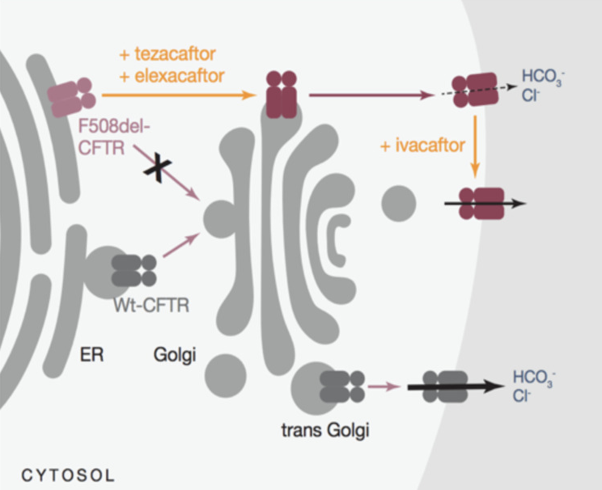
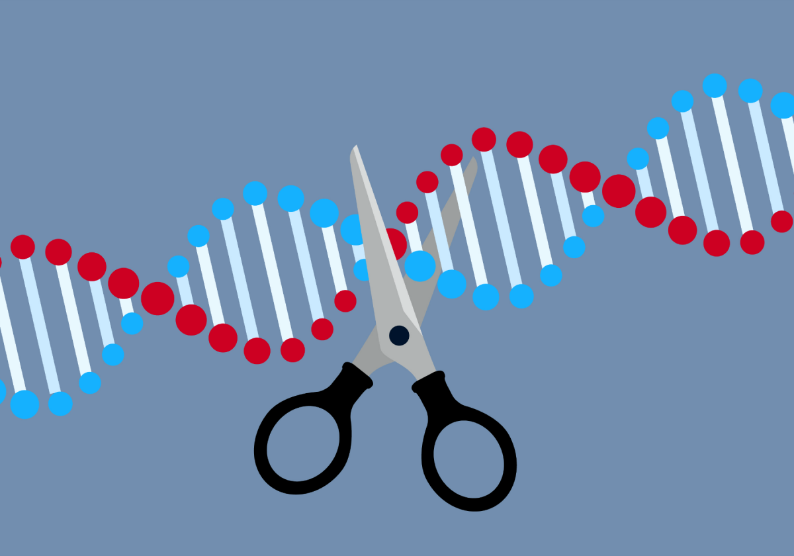

Growing up with a close family member that has cystic fibrosis (CF), I have become increasingly interested in the technologies that are being developed to help CF patients. Recently, a breakthrough medication called Trikafta was approved by the FDA that helps to correctly fold the protein that is falsely generated by deleterious mutations in the Delta F508 gene (where most CF cases arise from).
That being said, I have created a project that details (1) the history of our understanding of CF, (2) the biological basis of the disease and the forces that maintain its prevalence, (3) our past medications and treatments for the disease, (4) the new Trikafta drug, and (5) the future outlook with respect to research into more effective cures. Through these sections, the reader can see many triumphs of modern science of the condition but they will also be able to recognize the slow crawl and mountain of failures that have defined the process.
Cystic fibrosis (CF) is a genetic disease that alters the daily life of about 30,000 Americans. Patients experience a myriad of incurable health defects which require countless pills, treatments, checkups, and hospital visits. Originally, CF was detected by parents that observed a higher salt content in the sweat of their children (Collins (2006) 112). Though this was a good indicator of the illness, it did not do much to aid in finding remedies. Doctors did know that CF patients failed to absorb certain nutrients, experienced pancreatic failure, and were afflicted with lung infections, but the source of the disease remained a mystery until the 20th century (Pearson (2009)).
As medicine progressed, it became obvious that truly understanding CF would require knowing its exact genetic factors. Once this information could be found, many doors would be opened for the research and development of treatments and cures. In the 1970s and 80s, scientists only knew that the mutation was somewhere in the 3 billion base pairs of the human genome (Collins (2006) 112-113). At first, the hunt to find the mutation was done blindly: researchers had no indications of the location to search in or the protein malfunction that was creating the disease (Pearson (2009)). To illustrate the difficulty of the search for the CF gene, a prominent researcher, Francis Collins, posed with a needle and a large stack of hay.
In 1982, Paul Quinton showed that the majority of CF patients were “unable to conduct chloride ions across the epithelium of the skin” (Pearson (2009)). With his experiment, Quinton was able to find that the cystic fibrosis transmembrane conductance regulator (CFTR) was faulty in CF patients. Later in the 1980s, genetic searching methods progressed to help the search. The Restriction Fragment Length Polymorphisms (RFLPs) and Chromosomal Jumping techniques promised a faster search--but no doubt one of great magnitude (Chandrasekharan et al (2010), Collins (2006) 114). Utilizing those methods, researchers narrowed the search to a 2 million base pair segment of DNA on the human chromosome 7 (Collins (2006) 114).
As many other labs were racing to find the CF mutation, Lap-Chee Tsui and Francis Collins agreed to collaborate using the best techniques of the day (Pearson (2009)). After years of work, one rainy night in May of 1989, the lab data on that day’s work spelled the conclusion of their search (Collins (2006) 115). That day, it was discovered that the majority of CF patients could trace their disease back to a simple deletion of the base pairs CTT at the Delta F508 location (Collins (2006) 115). The world was in awe; it was a true triumph of science--one that promised to unlock endless medicinal research into CF as well as many other genetic diseases.
To commemorate the finding, Francis Collins joyfully played his song “Dare to Dream” at a meeting of thousands of researchers and patients (Collins (2006) 116; Cystic Fibrosis Foundation (2009)). This was truly an exciting time in genetic research: it had taken more than two dozen teams and over $50 million to track down that one three-letter deletion, but it promised progress over the elusive disease (Collins (2006) 116). However, as scientists shifted their attention to researching possible solutions to CF, they encountered roadblocks.
For one, mice with mutated versions of CFTR did not exhibit a high magnitude of symptoms and were thus poor test subjects (Pearson (2009)). This made trial medication and treatment research much more difficult. Additionally, the CFTR protein is huge, is embedded in the cell’s plasma membrane, and has a small number of copies in each cell; these factors made observing the protein extremely difficult (Pearson (2009)). Additionally, the CFTR gene was special because it had to have its function restored while other genetic diseases only needed the affected proteins to be taken out of commission (Pearson (2009)). Worst of all, the specific physiological effects of the mutated CFTR were not fully understood, causing debates and conflicts among scientists. One example of this was the ‘salt wars,’ which was an argument over the biochemical method that caused lung infections (Pearson (2009)).
In order to understand the current progress being made on cystic fibrosis, we must first understand its complicated biology. Though the Delta F508 mutation is responsible for the majority of cases, CF mutations have been found in thousands of different loci. While CF can be caused by many different genetic changes in different locations, all cases are the result of recessive mutations (Collins (2006) 113). From an evolutionary perspective, the recessive nature of these traits is intuitive because a dominant change would likely have died out quickly in any population.
Another interesting fact about CF mutations is that heterozygous individuals never exhibit symptoms--only people that are homozygous recessive for the allele will have the disease (Collins (2006) 113). Looking at the exact phenotypic expression of Delta F508, scientists found that the CTT deletion eliminates a singular Phenylalanine in the chain of the more than 1,400 amino acids that make up the CFTR protein (Chandrasekharan et al (2010)). Though this change is seemingly small, it accounts for the most severe form of CF, where a slight altering of the manner in which the CFTR protein folds renders the chloride transfer process almost nonexistent (Chandrasekharan et al (2010)).
Interestingly, the allele frequency for CF is highest in European populations at about 1 in 25 people being carriers; the lowest frequency can be found in African and Asian populations, which are at about 1 in 65 and 1 in 90, respectively (Pearson (2009)). Certain mutations closely follow geographic lines; for instance, Jewish populations of the middle east have been found to exhibit a small subset of mutations (Kerem, Chiba-Falek, Kerem (1997)). The geographic specificity of the allele indicates that it is relatively new in the timeline of human existence; if CF predated the Homo sapien migration(s) out of Africa, then we would see it prevalent in all areas of the world, so we must conclude it succeeded out of Africa events. The many different loci in which CF mutations have been found also indicate that this mutation has occurred many times in history and at different locations. This information presents an important question: if the CF gene is so harmful to its homozygous carriers, why did CF-causing mutations persist in populations?
The current hypothesis is that the CFTR mutation was introduced into a population by accident (id est, a random mutation). With the grim health effects that CF brings along with the reproductive hindrance it causes, it’s clear that the dominant allele would have returned to fixation very quickly if not for a selective pressure of some kind. But what evolutionary process could cause such a dangerous allele to stick around?
One initial theory centered around the founder effect: if there were a few CF alleles in the small group of people that migrated to Europe and started the population, then it makes sense that the gene might still be present (Taub, Page (2013)). One issue with the founder effect theory is that genetic analysis has shown that modern-day Europe is the result of thousands of migration events; one population did not start the entire European continent, so the parameters of the founder effect are not met (Taub, Page (2013)).
Another closely related theory has to do with the bottleneck effect. Scientists hypothesized that some near-extinction event in Europe (possibly the black plague) might have overexpressed the CF mutation in the modern-day population (Taub, Page (2013)). This theory posits that the survivors of a large reduction in population count could have stochastically been carriers of the CF mutation, so the resulting European population replacement growth overexpressed the deleterious change. However, this theory requires a near-extinction event, something which has not been found to happen in the entirety of Europe. Confirming that the founder and bottleneck effect theories are not valid, computer modeling shows that the CF allele would have been exterminated by now if not for some selection pressure (Taub, Page (2013)).
Once those theories were disproved, researchers hypothesized that there might be some sort of heterozygous advantage with the CF allele (Angier (1994)). In this process, a homozygous dominant person, while completely healthy, might be more susceptible to an outside disease or affliction of some sort while a homozygous recessive person is plagued with some sort of medically significant health hindrance but is protected against the new affliction (Pearson (2009)). In this model, the heterozygous individual enjoys a mix of good natural health and protection from the outside entity. This has been observed in groups: heterozygous carriers of the sickle cell anemia trait enjoy a higher level of protection against malaria in Africa (Luzzatto (2012)). Without the prevalence of malaria in other parts of the globe, other ethnicities have a much lower probability of carrying the sickle cell allele. If the same heterozygous advantage logic can be applied to cystic fibrosis, then what kind of disease could be so deadly that it makes carrying such a deadly gene evolutionary beneficial?
Some studies initially showed promise that cholera, typhoid fever, dehydration, severe diarrhea, high blood pressure, or vitamin D deficiency might be the culprits (Shaffer (2019); Taub, Page (2013)). However, computer modeling showed that those afflictions were not enough to justify the allele frequency we observe today (Taub, Page (2013)). One disease does show promise: tuberculosis models supported a CF carrier rate of up to 1 in 20, which is nearly identical to the observed rate in Europe today (Shaffer (2019)). Though this would fit the data well, scientists lack the historical data needed to confirm the timing of the CF allele’s rise to stardom. The true cause of CF, thus, might incessantly remain a biological mystery.
Now knowing the history and biological basis of cystic fibrosis, we can look at how medicine has progressed to cure or help patients. Starting in the 1950s, there was little that could be done to manage the symptoms of CF (Chandrasekharan et al (2010)). Few of the children born with CF could expect to make it to elementary school and CF-specific medicines or treatments were almost nonexistent (Collins (2006) 112). On top of that, identifying the disease was difficult and CF had not reached the notoriety it has today. As more took notice of the disease, both in the medical community and broader world, researchers focused efforts on finding ways to combat the disease.
Improvements were made that helped symptom management, including enzyme replacement in the pancreas and a new class of antibiotics for lung infections (Collins (2006) 112). By the 1970s, the mean lifespan of a CF patient had increased to allow many to go to college, marry, and enter the workforce (Collins (2006) 112). In 1994, a company called Genentech introduced Pulmozyme (dornase alfa), an enzyme that helps to break up some of the thick pulmonary mucus that is a byproduct of the CFTR mutation (Pearson (2009)). A few years later, aerosolized antibiotics were approved to target lung infections at the source (Pearson (2009)). Soon after, it was found that the daily inhalation of hypertonic saline, which is a very salty water, could benefit the lungs in many CF patients (Pearson (2009)). Those treatments are now common across the vast majority of cases.
As the 21st century brought new medical advancements, the opportunity arose for the development of a new type of medicine, called modulators. Modulators are a general class of medicines that “target the underlying defect in the cystic fibrosis transmembrane conductance regulator” (Cystic Fibrosis Foundation (2021) “CFTR Modulator Types” ). Currently, there are two classes of modulators: potentiators and correctors (Cystic Fibrosis Foundation (2021) “Trikafta Approval: Frequently Asked Questions”). Correctors bind to the faulty CFTR protein outside of the membrane and help it fold correctly while potentiators bind to the CFTR protein in the membrane and hold the ion channel open (Zaher (2021)).
In March of 2008, researchers presented the encouraging results of a phase II trial of the VX-770 (Ivacaftor) potentiator (Pearson (2009)). This study showed that a few weeks of VX-770 had improved the lungs and dramatically decreased the chloride concentration of sweat in CF patients (Pearson (2009)). Though scientists initially identified a few functioning correctors, namely Corr-4a (bisamionomethylbithiazole C4) and VRT-325 (quinazolinone C3), their use brought many health complications and they were, therefore, unable to be FDA approved (Cystic Fibrosis News Today (2021)). A viable corrector did not get the green light until 2015 with Lumacaftor (VX-809); however, the drug was only approved for use in conjunction with the Ivacaftor potentiator (Cystic Fibrosis News Today (2021)). There are still not any correctors approved for use by themselves (Cystic Fibrosis News Today (2021)). Trikafta, a breakthrough medication recently approved by the FDA, combines both potentiators and correctors into one ‘super medicine’ that may improve the daily life of thousands of CF patients.
On October 21, 2019, Trikafta was approved by the FDA for use in cystic fibrosis patients aged 6 and older that have at least one approved mutation (Cystic Fibrosis Foundation (2021) “Trikafta Approval: Frequently Asked Questions”). The drug combines two correctors (Tezacaftor and Elexacaftor) with one potentiator (Ivacaftor) to cooperate effectively on restoring the ion transfer process (Zaher (2021)).
The FDA green light was given following the positive results of two randomized, double-blind phase III trials (Zaher (2021)). From those independent studies, it is clear that Trikafta has been rigorously tested and should be safe for the vast majority of CF patients. The medicine is expected to cut the number of daily CF prescriptions by half as well as reduce treatment, hospital, and therapy time by huge margins(Zaher (2021)). This diagram shows how the drug works at the cellular level.

However, not all is perfect with the new medicine. Trikafta only works in approximately 90% of patients and it presents an array of risks including liver damage, decreased liver function, high liver enzymes in the blood, and cataracts (Vertex Pharmaceuticals (2021)). Additionally, it is not recommended for people with kidney or liver problems, pregnant people, or people that are breastfeeding, which could be a fair percentage of CF patients (Vertex Pharmaceuticals (2021)). For CF patients that have relatively mild symptoms, Trikafta may present more risks than benefits, so its adoption may be slow for younger, healthier patients.
Another factor is the cost: Trikafta costs a whopping $311,503 per year while its benefit is valued at between $67,900 and $85,500 per year by the Institute for Clinical and Economic Review. Trikafta thus needs to have a 70% reduction in the current price, a fact that has certainly played a role in the reluctant adoption of the drug (Zaher (2021)). Thankfully, some insurance companies see the numerous long-term benefits that the medicine could provide and are willing to cough up the money; but those with less generous insurances, or those without health insurance at all, are left with virtually no option for getting the drug. Financially, acquiring Trikafta in less wealthy parts of the world appears to be a nonstarter at the present. Therefore, the financial and medical drawbacks that Trikafta brings have pushed researchers to continue developing treatments and cures for cystic fibrosis.
Though potentiators and correctors represent great medical strides, actually targeting the source of the problem is the medical community’s next focus. Instead of correcting the mutated protein, researchers want to find a way to directly change the genetic code that causes CF in the first place (Pearson (2009)). This type of help is called gene therapy, and it has been the goal of scientists ever since the Delta F508 mutation was found (Pearson (2009)).
In 1990, one year after Tsui and Collins made their landmark discovery, two independent research groups proved that it was possible to introduce the correct CF gene into ex vivo cells using a viral “vector,” or carrier (Khamsi (2020)). In 1993, a team of biologists used gene replacement to fix DNA without making the fixes heritable (Khamsi (2020)). However, their results were unimpressive on the practical side, which is a trend that continued for many years to come (Khamsi (2020)). In 1999, a patient undergoing a similar adenovirus-based treatment for a different disease died from an immune response to injected viral components (Khamsi (2020)). This greatly affected the sentiment of gene therapy and slowed its momentum (Khamsi (2020)). As a result, new delivery methods, such as adeno-associated viruses (AAVs) and lentiviruses, started being used (Khamsi (2020)). Additionally, non-viral methods have ongoing research, including processes that utilize lipid molecules, tRNA, mRNA, read-through approaches, and CRISPR-Cas9 (Khamsi (2020)). While these methods are promising, it is much too early to tell if they can ever make it past clinical trials (Khamsi (2020)).

The future for cystic fibrosis patients is a promising one. Though our understanding of CF has evolved rapidly, the race for a cure has been an unfortunately difficult one. Having a close family member with the disease has shown me the resilience that CF requires of patients and their families--a resiliency that I pray our doctors and researchers will continue to have as they chase the development of ever more complex therapies and cures.
Chandrasekharan et al. “Impact of gene patents and licensing practices on access to genetic testing for cystic fibrosis.” Genetics in Medicine 12, S194–S21, April 2010. https://www.nature.com/articles/gim2010148?proof=tr.
Collins, Francis S. The Language of God: A Scientist Presents Evidence for Belief. New York: Free Press, 2006.
Kerem, B., Chiba-Falek, O., & Kerem, E. “Cystic fibrosis in Jews: frequency and mutation distribution.” Genetic testing, 1(1), 35–39, 1997. https://doi.org/10.1089/gte.1997.1.35.
Khamsi, Roxanne. “Gene therapy could offer an inclusive cure for cystic fibrosis.” Nature. Published on July 29, 2020. Accessed on November 14, 2021. https://www.nature.com/articles/d41586-020-02111-z.
Luzzatto, Lucio. “Sickle cell anaemia and malaria.” Mediterranean journal of hematology and infectious diseases vol. 4,1, 2012: e2012065. doi:10.4084/MJHID.2012.065.
Taub, Daniel and Page, Joshua. “Cystic Fibrosis: Exploration of evolutionary explanations for the high frequency of a common genetic disorder.” Genetics Society of America Peer-Reviewed Education Portal (GSA PREP). 2013.004; doi: 10.1534/gsaprep.2013.004.
Tice J. A., Kuntz K. M., Wherry K., Chapman R., Seidner M., Pearson S. D., Rind D. M. “Modulator Treatments for Cystic Fibrosis: Effectiveness and Value; Final Evidence Report and Meeting Summary.” Institute for Clinical and Economic Review, September 23, 2020. https://icer.org/wp-content/uploads/2020/08/ICER_CF_Final_Report_092320.pdf.